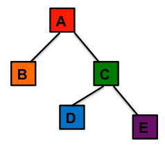

A Query Criterion is the SNOMED CT encoded 'token' which the user
specifies as the criterion for retrieving clinical records/entries that match the
'token'. A Query Criterion can either be a SNOMED CT concept or a SNOMED CT encoded
post-coordinated expression.
Tip: Typically users associate concept ids
and text strings with query terms, but in a post-coordination enabled system,it might
not always be possible to associate a single concept id or text string with a Query
Term.
The following are all valid examples of Query Criteria:
- 22298006|Myocardial Infarction (disorder)|
- Asthma : Severity=Mild
Subsumption Strategy
The
boundaries of a 'search token' can be defined using the Subsumption strategy
property which allows the user to specify the depth in the concept hierarchy that
needs to be traversed while returning matches.
Table 1. Flavours of Subsumption
| Subsumption Flavour |
Short Summary |
| SELF_ONLY |
Specifies that only the 'search token' included in the Query Criterion
is to be used to return matches.
|
| ALL_CHILDREN |
Specifies that the 'search token' in the Query Criterion and all its
child concepts/expressions are to be used to return matches.
|
| ALL_DESCENDANTS |
Specifies that the 'search token' in the Query Criterion and all its
descendant concepts/expressions are to be used to return matches.
|
| ALL_CHILDREN_EXCEPT_SELF |
Specifies that all the children of the 'search token' in the Query
Criterion but not the 'search token' itself are to be used to return
matches.
|
| ALL_DESCENDANTS_EXCEPT_SELF |
Specifies that all the descendants of the 'search token' in the Query
Criterion but not the 'search token' itself are to be used to return
matches.
|
In the following figure, we
represent subsumption relations between 5 entities.

The following are the named logical relationships between Entity A and the
other entities.
Table 2. Named Subsumption Relationships
| Entity |
Relationship to Entity |
Entities with Relationship |
| A |
CHILDREN |
B, C |
| A |
DESCENDANTS |
B,C, D, E |
| B |
CHILDREN |
- |
| B |
DESCENDANTS |
- |
| C |
CHILDREN |
D, E |
| C |
DESCENDANTS |
- |
Query | Get all patients with 'Myocardial Infarction' | typically returns all
patients who have a mention of 'Myocardial Infarction' in their record. However, this
query typically will not return patients with 'Acute Q Wave Myocardial Infarction' even
though "Acute Q Wave Myocardial Infarction' is a type of 'Myocardial Infarction'. In
fact, SNOMED CT lists 75 types of 'Myocardial Infarction' and ideally, one would expect
the afore mentioned query to return any patient who had any of the 75 types of
'Myocardial Infarction'.